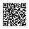

1차시 · 생각
불편 찾기 → 해결 방법 비교
→ AI에게 보낼 요청문 완성
오늘의 도전
친구와 생각하고, AI와 만들어요.
멋진 화면보다 함께 생각한 과정이 중요해요.
40분 + 40분
불편 찾기 → 해결 방법 비교
→ AI에게 보낼 요청문 완성
Canva로 구현 → 직접 시험
→ Padlet에서 친구와 나눔
핵심 기능 하나면 충분해요.
2명 또는 3명이 한 팀
질문 읽기·생각 기록
공유 문서의 링크로 시험
Canva에서 만들기
실행 링크를 공유 문서에
같은 공유 문서를 보고
1번과 함께 시험
말하기 어려우면 가리키거나 그림으로 알려 줘도 좋아요.
우리의 대화 약속
한 사람이 모두 정하지 않아요. 모든 팀원의 생각을 들어요.
프롬프트 = AI에게 보내는 요청문
사용자가 무엇을
넣거나 고르나요?
어떤 버튼을
누르나요?
화면에 무엇이
나와야 하나요?
“이렇게 해 보니, 이렇게 나오면 성공!”도 정해요.
이제 팀별로 시작해요
Canva 문서 만들기 → 조원 초대
편집 가능한 같은 문서에서 요청문과 링크를 함께 봐요.
최종 제출은 우리 반 Padlet 제출 양식에!
결과 감상은 나중에 안내하는 보기 링크로 해요.
